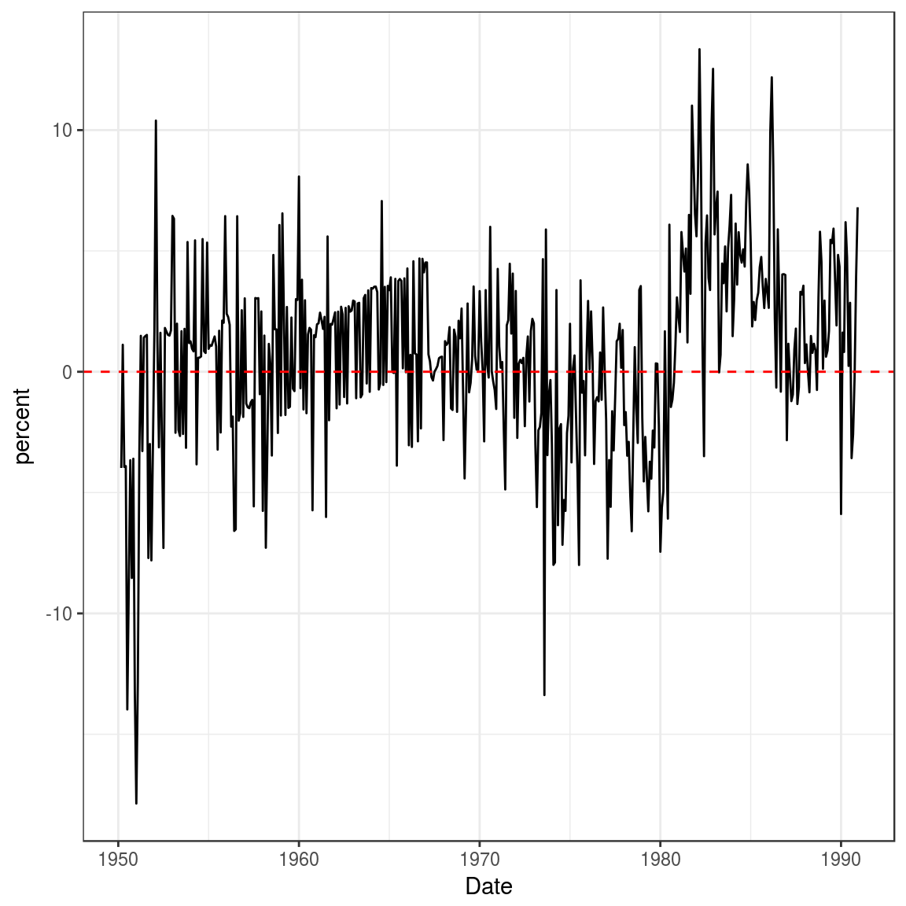

Chapter 02: Large Sample Theory
Lachlan Deer
2019-02-28
Source:vignettes/chapter-02.Rmd
chapter-02.RmdLoad Libraries
library(hayashir)
library(ggplot2)
library(dplyr)
#>
#> Attaching package: 'dplyr'
#> The following objects are masked from 'package:stats':
#>
#> filter, lag
#> The following objects are masked from 'package:base':
#>
#> intersect, setdiff, setequal, union
library(zoo)
#>
#> Attaching package: 'zoo'
#> The following objects are masked from 'package:base':
#>
#> as.Date, as.Date.numericInspecting the Data
head(mishkin)
#> # A tibble: 6 x 7
#> year month inflation_1 inflation_3 tbill_1 tbill_3 cpi
#> <dbl> <dbl> <dbl> <dbl> <dbl> <dbl> <dbl>
#> 1 1950 2 -3.55 1.13 1.10 1.13 23.5
#> 2 1950 3 5.25 4.00 1.13 1.14 23.6
#> 3 1950 4 1.69 4.49 1.12 1.14 23.6
#> 4 1950 5 5.06 7.82 1.15 1.18 23.7
#> 5 1950 6 6.72 9.43 1.16 1.17 23.8
#> 6 1950 7 11.7 9.98 1.15 1.17 24.1Figure 2.3
First we construct a date variable and then calculate CPI inflation The library zoo contains the function as.yearmon() to construct dates containing only year and months.
mishkin2 <- mishkin %>%
mutate(time_period = as.yearmon(paste(year, month, sep = "-")),
cpi_inflation = (cpi/lag(cpi) - 1) * 100 * 12
)
Now we plot the data:
ggplot(mishkin2) +
geom_line(aes(time_period, tbill_1, linetype = "tbill_1")) +
geom_line(aes(time_period, cpi_inflation, linetype = "cpi_inflation")) +
xlab("Date") +
ylab("percent") +
theme_bw() +
theme(legend.position="bottom") +
scale_linetype_manual(name = element_blank(),
values = c(tbill_1 = "solid", cpi_inflation = "dotted"),
labels = c("inflation rate", "1 month T-bill rate")
)
#> Don't know how to automatically pick scale for object of type yearmon. Defaulting to continuous.
Figure 2.4
Compute real interest rate:
mishkin2 <- mishkin2 %>%
mutate(real_rate = tbill_1 - cpi_inflation)And now plot:
ggplot(mishkin2) +
geom_line(aes(time_period, real_rate, linetype = "tbill_1")) +
geom_hline(yintercept = 0, linetype = "dashed", color = "red") +
xlab("Date") +
ylab("percent") +
theme_bw() +
theme(legend.position="none")
#> Don't know how to automatically pick scale for object of type yearmon. Defaulting to continuous.
#> Warning: Removed 1 rows containing missing values (geom_path).
Table 2.1
First we subset the data. The relevant Date range is January 1953 to July 1971.
fama <- mishkin2 %>%
filter(between(as.yearmon(time_period),
as.yearmon("Jan 1953"),
as.yearmon("Jul 1971")
)
)
#> Warning: between() called on numeric vector with S3 classlibrary(skimr)
skim(fama$real_rate)
#> Skim summary statistics
#>
#> Variable type: numeric
#> variable missing complete n mean sd p0 p25 median p75
#> fama$real_rate 0 223 223 0.89 2.77 -7.28 -0.99 1.1 2.77
#> p100 hist
#> 8.08 ▁▁▃▆▇▆▂▁Then the ACF
acf(fama$real_rate, lag.max = 12, plot = FALSE)
#>
#> Autocorrelations of series 'fama$real_rate', by lag
#>
#> 0 1 2 3 4 5 6 7 8 9
#> 1.000 -0.105 0.173 -0.018 -0.007 -0.063 -0.025 -0.094 0.088 0.090
#> 10 11 12
#> 0.017 0.004 0.206Then the Ljung Box Q tests (use the portes package for more flexibility)
library(portes)
#> Loading required package: parallelLjungBox(fama$real_rate, lags = seq(1, 12))
#> lags statistic df p-value
#> 1 2.481488 1 0.115193236
#> 2 9.242763 2 0.009839194
#> 3 9.320394 3 0.025320868
#> 4 9.330291 4 0.053353656
#> 5 10.248907 5 0.068482075
#> 6 10.398756 6 0.108833047
#> 7 12.439184 7 0.087010028
#> 8 14.265193 8 0.075109784
#> 9 16.177062 9 0.063274884
#> 10 16.247091 10 0.092774254
#> 11 16.250588 11 0.132079904
#> 12 26.309947 12 0.009700248Is the Nominal Interest Rate the Optimal Predictor?
model1 <- lm(cpi_inflation ~ tbill_1, data = fama)
summary(model1)
#>
#> Call:
#> lm(formula = cpi_inflation ~ tbill_1, data = fama)
#>
#> Residuals:
#> Min 1Q Median 3Q Max
#> -7.1795 -1.8660 -0.2112 1.8817 8.1608
#>
#> Coefficients:
#> Estimate Std. Error t value Pr(>|t|)
#> (Intercept) -0.8699 0.4231 -2.056 0.041 *
#> tbill_1 0.9930 0.1200 8.277 1.2e-14 ***
#> ---
#> Signif. codes: 0 '***' 0.001 '**' 0.01 '*' 0.05 '.' 0.1 ' ' 1
#>
#> Residual standard error: 2.78 on 221 degrees of freedom
#> Multiple R-squared: 0.2366, Adjusted R-squared: 0.2332
#> F-statistic: 68.51 on 1 and 221 DF, p-value: 1.197e-14How to get robust standard errors?
library(sandwich)
library(lmtest)
#>
#> Attaching package: 'lmtest'
#> The following object is masked from 'package:hayashir':
#>
#> moneydemand
coeftest(model1, vcov = vcovHC(model1, "HC0")) # white's
#>
#> t test of coefficients:
#>
#> Estimate Std. Error t value Pr(>|t|)
#> (Intercept) -0.86987 0.42405 -2.0513 0.04141 *
#> tbill_1 0.99301 0.10948 9.0702 < 2e-16 ***
#> ---
#> Signif. codes: 0 '***' 0.001 '**' 0.01 '*' 0.05 '.' 0.1 ' ' 1library(car)
#> Loading required package: carData
#>
#> Attaching package: 'car'
#> The following object is masked from 'package:dplyr':
#>
#> recode
linearHypothesis(model1, "tbill_1 = 1", white.adjust = "hc0")
#> Linear hypothesis test
#>
#> Hypothesis:
#> tbill_1 = 1
#>
#> Model 1: restricted model
#> Model 2: cpi_inflation ~ tbill_1
#>
#> Note: Coefficient covariance matrix supplied.
#>
#> Res.Df Df F Pr(>F)
#> 1 222
#> 2 221 1 0.0041 0.9492